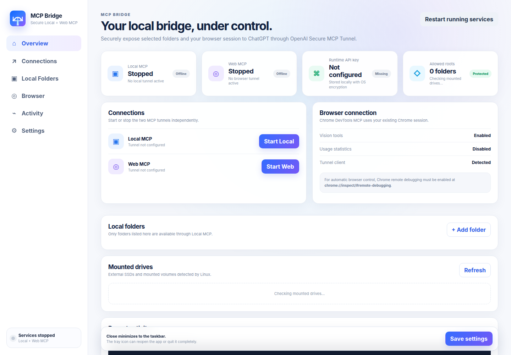

↔
Secure local bridge
Local Files MCP and Chrome DevTools MCP stay on your computer while OpenAI Secure MCP Tunnel provides the connection path. No public local MCP endpoint is required.
MCP Bridge gives ChatGPT controlled access to approved local folders, optional terminal tools, and your existing Chrome session through OpenAI Secure MCP Tunnel.

Start only what you need, keep access scoped, and control both services independently from a polished desktop dashboard or the system tray.
Local Files MCP and Chrome DevTools MCP stay on your computer while OpenAI Secure MCP Tunnel provides the connection path. No public local MCP endpoint is required.
Expose only the folders you add, with read-only or read/write permissions per root.
Use tabs and authenticated browser sessions already open in Chrome.
Close minimizes. Reopen, start, stop, restart, update, or quit from the system tray.
Use restricted shell mode or explicitly enable full local-user shell access.
MCP Bridge detects common Linux mount locations, resolves real paths, checks access, and shows friendly volume details instead of making you work with opaque mount IDs.
Volumes under /mnt, /media/<user>, or /run/media/<user> can be shown with label, filesystem, size, and real mount path.
Before a mounted root is exposed, MCP Bridge confirms it exists and is readable. Read/write roots are validated for write access too.
MCP Bridge checks GitHub Releases, selects the correct installer for your platform, verifies SHA-256, and only then enables installation.
The tunnel client runs locally and connects outward to OpenAI. Local MCP and Web MCP remain separate, independently controllable capabilities.
Official releases bundle the app runtime, Local MCP, Chrome DevTools MCP, and the full OpenAI tunnel client.
curl -fsSL -H "Accept: application/vnd.github.raw+json" "https://api.github.com/repos/haseebgb92/ChatGPT-MCp/contents/install-linux.sh?ref=main" | bash
Use the latest release installer, then let MCP Bridge handle future updates from inside the app.
Latest releaseNo. MCP Bridge uses OpenAI Secure MCP Tunnel, so your local MCP server does not need a public inbound endpoint.
No by default. Local MCP exposes only the roots you explicitly add, each with read-only or read/write permissions.
Yes. v0.2.x adds mounted-volume discovery and friendly drive handling while preserving real-path security checks.
The window minimizes instead of killing active tunnels. Use the tray menu to reopen or explicitly quit the app.
From v0.2.1 onward, installers are matched against their published SHA-256 checksum before installation is allowed.
Approved files, optional terminal access, and your existing Chrome session — managed from one polished Linux and Windows desktop bridge.